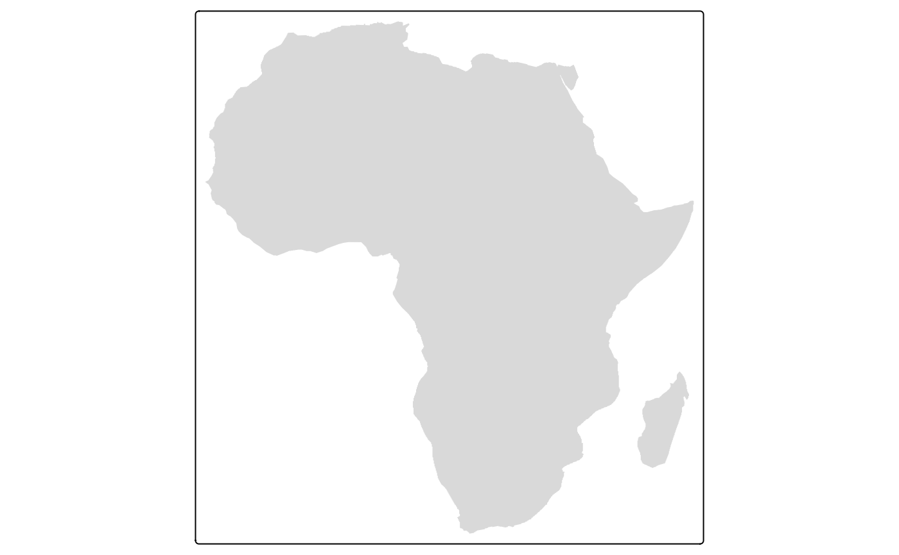
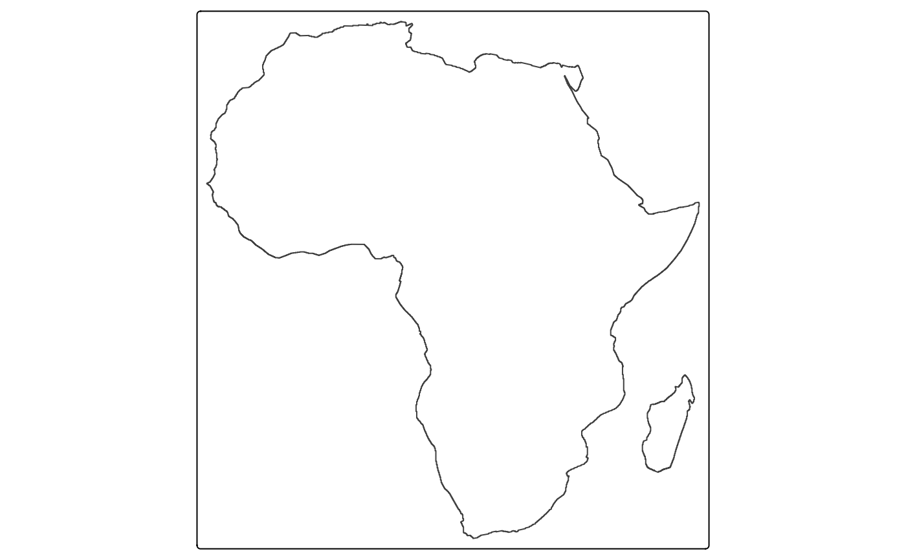
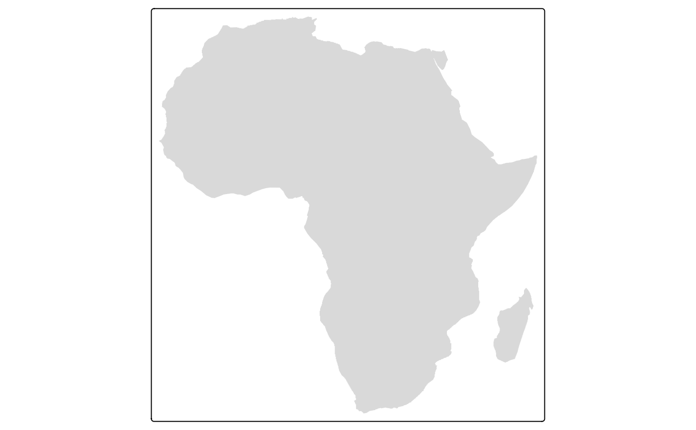
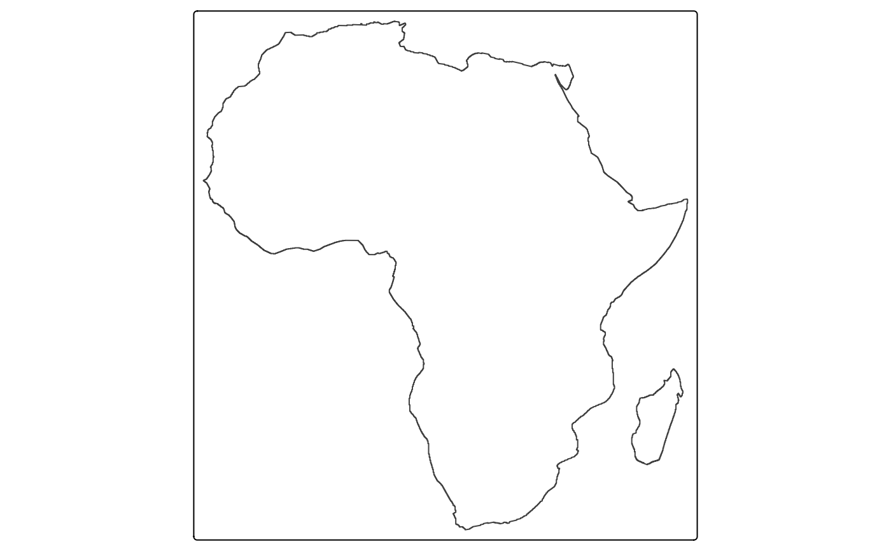

Map layer that draws polygons. Supported visual variables are: fill (the fill color),
col (the border color), lwd (line width), lty (line type),
fill_alpha (fill color alpha transparency) and col_alpha (border color alpha transparency).
Usage
tm_polygons(
fill = tm_const(),
fill.scale = tm_scale(),
fill.legend = tm_legend(),
fill.free = NA,
col = tm_const(),
col.scale = tm_scale(),
col.legend = tm_legend(),
col.free = NA,
lwd = tm_const(),
lwd.scale = tm_scale(),
lwd.legend = tm_legend(),
lwd.free = NA,
lty = tm_const(),
lty.scale = tm_scale(),
lty.legend = tm_legend(),
lty.free = NA,
fill_alpha = tm_const(),
fill_alpha.scale = tm_scale(),
fill_alpha.legend = tm_legend(),
fill_alpha.free = NA,
col_alpha = tm_const(),
col_alpha.scale = tm_scale(),
col_alpha.legend = tm_legend(),
col_alpha.free = NA,
linejoin = "round",
lineend = "round",
plot.order = tm_plot_order("AREA", reverse = FALSE, na.order = "bottom"),
trans.args = list(polygons.only = "ifany"),
mapping.args = list(),
zindex = NA,
group = NA,
group.control = "check",
popup.vars = NA,
popup.format = list(),
hover = "",
id = "",
...
)
tm_fill(...)
tm_borders(col = tm_const(), ...)Arguments
- fill, fill.scale, fill.legend, fill.free
Visual variable that determines the fill color. See details.
- col, col.scale, col.legend, col.free
Visual variable that determines the border color. See details.
- lwd, lwd.scale, lwd.legend, lwd.free
Visual variable that determines the line width. See details.
- lty, lty.scale, lty.legend, lty.free
Visual variable that determines the line type. See details.
- fill_alpha, fill_alpha.scale, fill_alpha.legend, fill_alpha.free
Visual variable that determines the fill color alpha transparency See details.
- col_alpha, col_alpha.scale, col_alpha.legend, col_alpha.free
Visual variable that determines the border color alpha transparency. See details.
- linejoin, lineend
Line join and line end. See gpar() for details.
- plot.order
Specification in which order the spatial features are drawn. See
tm_plot_order()for details.- trans.args, mapping.args
lists that are passed on to internal transformation and mapping functions respectively.
- zindex
Map layers are drawn on top of each other. The
zindexnumbers (one for each map layer) determines the stacking order. By default the map layers are drawn in the order they are called.- group
Name of the group to which this layer belongs. This is only relevant in view mode, where layer groups can be switched (see
group.control)- group.control
In view mode, the group control determines how layer groups can be switched on and off. Options:
"radio"for radio buttons (meaning only one group can be shown),"check"for check boxes (so multiple groups can be shown), and"none"for no control (the group cannot be (de)selected).- popup.vars
names of data variables that are shown in the popups in
"view"mode. Set popup.vars toTRUEto show all variables in the shape object. Set popup.vars toFALSEto disable popups. Setpopup.varsto a character vector of variable names to those those variables in the popups. The default (NA) depends on whether visual variables (e.g.fill) are used. If so, only those are shown. If not all variables in the shape object are shown.- popup.format
list of formatting options for the popup values. See the argument
legend.formatfor options. Only applicable for numeric data variables. If one list of formatting options is provided, it is applied to all numeric variables ofpopup.vars. Also, a (named) list of lists can be provided. In that case, each list of formatting options is applied to the named variable.- hover
name of the data variable that specifies the hover labels
- id
name of the data variable that specifies the indices of the spatial features. Only used for
"view"mode.- ...
to catch deprecated arguments from version < 4.0
Details
The visual variable arguments (e.g. col) can be specified with either a data
variable name (e.g., a spatial vector attribute or a raster layer of the object
specified in tm_shape()), or with a visual value (for col, a color is expected).
Multiple values can be specified: in that case facets are created.
These facets can be combined with other faceting data variables, specified with tm_facets().
The *.scale arguments determine the used scale to map the data values to
visual variable values. These can be specified with one of the available
tm_scale_*() functions. The default is specified by the tmap option (tm_options()) scales.var.
The *.legend arguments determine the used legend, specified with tm_legend().
The default legend and its settings are determined by the tmap options (tm_options()) legend. .
The *.free arguments determine whether scales are applied freely across facets, or shared.
A logical value is required. They can also be specified with a vector of three
logical values; these determine whether scales are applied freely per facet dimension.
This is only useful when facets are applied (see tm_facets()).
There are maximally three facet dimensions: rows, columns, and pages. This only
applies for a facet grid (tm_facets_grid()). For instance, col.free = c(TRUE, FALSE, FALSE)
means that for the visual variable col, each row of facets will have its own
scale, and therefore its own legend. For facet wraps and stacks
(tm_facets_wrap() and tm_facets_stack()) there is only one facet dimension,
so the *.free argument requires only one logical value.
Examples
# load Africa country data
data(World)
Africa = World[World$continent == "Africa", ]
Africa_border = sf::st_make_valid(sf::st_union(sf::st_buffer(Africa, 0.001))) # slow and ugly
# without specifications
tm_shape(Africa_border) + tm_polygons()
 tm_shape(Africa_border) + tm_fill()

tm_shape(Africa_border) + tm_borders()

# specification with visual variable values
tm_shape(Africa) +
tm_polygons(fill = "limegreen", col = "purple", lwd = 3, lty = "solid", col_alpha = 0.3) +
tm_shape(Africa_border) +
tm_borders("darkred", lwd = 4)
# specification with a data variable
tm_shape(Africa) +
tm_polygons(fill = "income_grp", fill.scale = tm_scale_categorical(values = "tol.muted"))
tm_shape(Africa_border) + tm_fill()

tm_shape(Africa_border) + tm_borders()

# specification with visual variable values
tm_shape(Africa) +
tm_polygons(fill = "limegreen", col = "purple", lwd = 3, lty = "solid", col_alpha = 0.3) +
tm_shape(Africa_border) +
tm_borders("darkred", lwd = 4)
# specification with a data variable
tm_shape(Africa) +
tm_polygons(fill = "income_grp", fill.scale = tm_scale_categorical(values = "tol.muted"))
 # continuous color scale with landscape legend
tm_shape(Africa) +
tm_polygons(fill = "inequality",
fill.scale = tm_scale_continuous(values = "kovesi.rainbow_bu_pk"),
fill.legend = tm_legend(
title = "", orientation = "landscape",
position = tm_pos_out("center", "bottom"), frame = FALSE
)) +
tm_title("Inequality index", position = tm_pos_in("right", "TOP"), frame = FALSE) +
tm_layout(frame = FALSE)
#> Error in if (!is.na(comp$width)) { textPgs = strsplit(comp$text, "\n")[[1]] text2 = do.call(paste, c(lapply(textPgs, function(p) { textW = textS * graphics::strwidth(p, units = "inch", family = comp$fontfamily, font = fontface2nr(comp$fontface)) w = sum(textP[1], textW, textP[2]) nlines = round(w/(comp$width * textS * o$lin)) wrapText(p, nlines) }), list(sep = "\n"))) textW2 = textS * graphics::strwidth(text2, units = "inch", family = comp$fontfamily, font = fontface2nr(comp$fontface)) w2 = sum(textP[1], textW2, textP[2]) comp$text = text2 comp$Win = w2} else { comp$Win = w}: argument is of length zero
tm_shape(World) +
tm_polygons(tm_mv("inequality", "well_being"))
#> Labels abbreviated by the first letters, e.g.: "2 to 3" => "2"
# continuous color scale with landscape legend
tm_shape(Africa) +
tm_polygons(fill = "inequality",
fill.scale = tm_scale_continuous(values = "kovesi.rainbow_bu_pk"),
fill.legend = tm_legend(
title = "", orientation = "landscape",
position = tm_pos_out("center", "bottom"), frame = FALSE
)) +
tm_title("Inequality index", position = tm_pos_in("right", "TOP"), frame = FALSE) +
tm_layout(frame = FALSE)
#> Error in if (!is.na(comp$width)) { textPgs = strsplit(comp$text, "\n")[[1]] text2 = do.call(paste, c(lapply(textPgs, function(p) { textW = textS * graphics::strwidth(p, units = "inch", family = comp$fontfamily, font = fontface2nr(comp$fontface)) w = sum(textP[1], textW, textP[2]) nlines = round(w/(comp$width * textS * o$lin)) wrapText(p, nlines) }), list(sep = "\n"))) textW2 = textS * graphics::strwidth(text2, units = "inch", family = comp$fontfamily, font = fontface2nr(comp$fontface)) w2 = sum(textP[1], textW2, textP[2]) comp$text = text2 comp$Win = w2} else { comp$Win = w}: argument is of length zero
tm_shape(World) +
tm_polygons(tm_mv("inequality", "well_being"))
#> Labels abbreviated by the first letters, e.g.: "2 to 3" => "2"
 ####################################
########## v3 ######################
####################################
tmap_style("v3")
#> tmap style set to "v3"
#> other available styles are: "white", "gray", "natural", "cobalt", "albatross", "classic", "gray_v3", "grey_v3", "natural_v3", "cobalt_v3", "albatross_v3", "classic_v3"
data(World)
# Constant fill
tm_shape(World) + tm_fill("darkolivegreen3") + tm_format("World", title="A green World")
#> Warning: The 'title' argument of 'tm_format()' is deprecated as of tmap 4.0. Please use 'tm_title()' instead.
#> Error in if (!is.na(comp$width)) { textPgs = strsplit(comp$text, "\n")[[1]] text2 = do.call(paste, c(lapply(textPgs, function(p) { textW = textS * graphics::strwidth(p, units = "inch", family = comp$fontfamily, font = fontface2nr(comp$fontface)) w = sum(textP[1], textW, textP[2]) nlines = round(w/(comp$width * textS * o$lin)) wrapText(p, nlines) }), list(sep = "\n"))) textW2 = textS * graphics::strwidth(text2, units = "inch", family = comp$fontfamily, font = fontface2nr(comp$fontface)) w2 = sum(textP[1], textW2, textP[2]) comp$text = text2 comp$Win = w2} else { comp$Win = w}: argument is of length zero
# Borders only
tm_shape(World) + tm_borders()
####################################
########## v3 ######################
####################################
tmap_style("v3")
#> tmap style set to "v3"
#> other available styles are: "white", "gray", "natural", "cobalt", "albatross", "classic", "gray_v3", "grey_v3", "natural_v3", "cobalt_v3", "albatross_v3", "classic_v3"
data(World)
# Constant fill
tm_shape(World) + tm_fill("darkolivegreen3") + tm_format("World", title="A green World")
#> Warning: The 'title' argument of 'tm_format()' is deprecated as of tmap 4.0. Please use 'tm_title()' instead.
#> Error in if (!is.na(comp$width)) { textPgs = strsplit(comp$text, "\n")[[1]] text2 = do.call(paste, c(lapply(textPgs, function(p) { textW = textS * graphics::strwidth(p, units = "inch", family = comp$fontfamily, font = fontface2nr(comp$fontface)) w = sum(textP[1], textW, textP[2]) nlines = round(w/(comp$width * textS * o$lin)) wrapText(p, nlines) }), list(sep = "\n"))) textW2 = textS * graphics::strwidth(text2, units = "inch", family = comp$fontfamily, font = fontface2nr(comp$fontface)) w2 = sum(textP[1], textW2, textP[2]) comp$text = text2 comp$Win = w2} else { comp$Win = w}: argument is of length zero
# Borders only
tm_shape(World) + tm_borders()
 # Data variable containing color values
World$isNLD = ifelse(World$name=="Netherlands", "darkorange", "darkolivegreen3")
tm_shape(World) +
tm_fill("isNLD") +
tm_layout("Find the Netherlands!")
# Data variable containing color values
World$isNLD = ifelse(World$name=="Netherlands", "darkorange", "darkolivegreen3")
tm_shape(World) +
tm_fill("isNLD") +
tm_layout("Find the Netherlands!")
 tm_shape(World, projection = "+proj=eck4") +
tm_polygons("economy", title="Economy", id="name") +
tm_text("iso_a3", size="AREA", scale=1.5) +
tm_format("World")
#> Warning: The 'projection' argument of 'tm_shape()' is deprecated as of tmap 4.0. Pleaes use 'crs' instead.
#> Deprecated tmap v3 code detected. Code translated to v4
#> Deprecated tmap v3 code detected. Code translated to v4
tm_shape(World, projection = "+proj=eck4") +
tm_polygons("economy", title="Economy", id="name") +
tm_text("iso_a3", size="AREA", scale=1.5) +
tm_format("World")
#> Warning: The 'projection' argument of 'tm_shape()' is deprecated as of tmap 4.0. Pleaes use 'crs' instead.
#> Deprecated tmap v3 code detected. Code translated to v4
#> Deprecated tmap v3 code detected. Code translated to v4
 # Numeric data variable
tm_shape(World, projection = "+proj=eck4") +
tm_polygons("HPI", palette="RdYlGn", style="cont", n=8,
title="Happy Planet Index", id="name") +
tm_text("iso_a3", size="AREA", scale=1.5) +
tm_style("grey") +
tm_format("World")
#> Warning: The 'projection' argument of 'tm_shape()' is deprecated as of tmap 4.0. Pleaes use 'crs' instead.
#> Deprecated tmap v3 code detected. Code translated to v4
#> Deprecated tmap v3 code detected. Code translated to v4
# Numeric data variable
tm_shape(World, projection = "+proj=eck4") +
tm_polygons("HPI", palette="RdYlGn", style="cont", n=8,
title="Happy Planet Index", id="name") +
tm_text("iso_a3", size="AREA", scale=1.5) +
tm_style("grey") +
tm_format("World")
#> Warning: The 'projection' argument of 'tm_shape()' is deprecated as of tmap 4.0. Pleaes use 'crs' instead.
#> Deprecated tmap v3 code detected. Code translated to v4
#> Deprecated tmap v3 code detected. Code translated to v4
 if (FALSE) {
data(NLD_prov, NLD_muni)
# Map coloring algorithm
tm_shape(NLD_prov) +
tm_fill("name", legend.show = FALSE) +
tm_shape(NLD_muni) +
tm_polygons("MAP_COLORS", palette="Greys", alpha = .25) +
tm_shape(NLD_prov) +
tm_borders(lwd=2) +
tm_text(I("name"), col = "white", shadow=TRUE) +
tm_format("NLD", title="Dutch provinces and\nmunicipalities", bg.color="white")
# Cartogram
if (require(cartogram)) {
NLD_prov_pop <- cartogram(NLD_prov, "population")
tm_shape(NLD_prov_pop) +
tm_polygons("origin_non_west", title = "Non-western origin (%)")
}
}
# TIP: check out these examples in view mode, enabled with tmap_mode("view")
if (FALSE) {
data(NLD_prov, NLD_muni)
# Map coloring algorithm
tm_shape(NLD_prov) +
tm_fill("name", legend.show = FALSE) +
tm_shape(NLD_muni) +
tm_polygons("MAP_COLORS", palette="Greys", alpha = .25) +
tm_shape(NLD_prov) +
tm_borders(lwd=2) +
tm_text(I("name"), col = "white", shadow=TRUE) +
tm_format("NLD", title="Dutch provinces and\nmunicipalities", bg.color="white")
# Cartogram
if (require(cartogram)) {
NLD_prov_pop <- cartogram(NLD_prov, "population")
tm_shape(NLD_prov_pop) +
tm_polygons("origin_non_west", title = "Non-western origin (%)")
}
}
# TIP: check out these examples in view mode, enabled with tmap_mode("view")